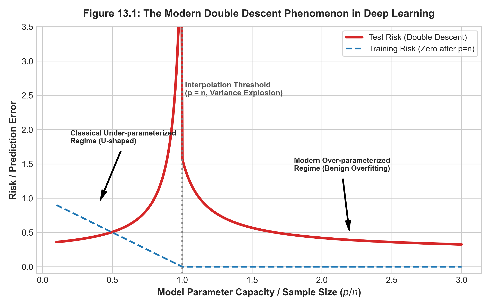

13 現代前沿：深度學習、分佈偏移與可解釋性
13.1 本章導讀
在完成了從線性迴歸、正則化、支援向量機、集成學習到非監督降維與分群的完整巡禮後，我們來到了統計學習的最前沿。
在二十一世紀第三個十年，資料科學與人工智慧正面臨三大革命性的範式轉移（Paradigm Shifts）： 1. 「雙重下降（Double Descent）」現象：現代深層神經網路與過度參數化模型（參數量遠大於樣本數），顛覆了古典統計學百年來奉為圭臬的「U 型偏誤-變異數權衡」認知。 2. 「分佈偏移（Distribution Shift）」的現實挑戰：真實世界並非恆定不變的閉合系統，訓練資料與線上真實環境往往違背獨立同分佈（I.I.D.）假設。 3. 「高維多重檢定」與「可解釋性 AI（XAI）」：從萬維基因體與巨量特徵中，如何控制偽發現率（FDR）？面對複雜的黑盒子集成模型，如何利用賽局理論（Shapley Values）給出具備公理保證的歸因解釋？
本章將帶領讀者透視這些前沿課題的底層數學本質，完成全書知識體系的終極昇華。
13.1.1 💡 開篇實務案例導讀：百億參數大模型（LLM）的泛化反常與「醫療影像 AI 上線崩潰」之謎
在當代人工智慧的最前沿，正在發生兩件徹底顛覆傳統認知的現實衝擊：
- 超大規模語言模型（LLM）的泛化奇蹟： OpenAI GPT-4、Meta Llama 等模型擁有數百億甚至上兆個參數量（p），其參數量級遠遠超過了特定高品質對話微調數據集的樣本數（n）。依據古典統計學百年來的警告，如此龐大自由度的模型理應陷入災難性的過度配適暴死；然而現實卻完全相反——越過特定門檻後，模型的泛化測試誤差非但沒有暴增，反而呈現持續單調下降！這便是震動當代統計學界的「雙重下降（Double Descent）」現象。
- 頂尖醫療影像 AI 空運基層後的斷崖式崩潰： 某頂尖研究中心研發的「胸部 X 光深度學習診斷模型」，在知名教學醫院的內部驗證集上取得了超越專科醫師的 99% 超高準確率；然而當這套系統空運至基層偏鄉診所與歐洲醫院時，準確率直接暴跌至 52%（與隨機擲硬幣無異）。 事後嚴格的統計可解釋性稽核發現：模型根本沒有學會細微的肺部病理特徵，而是敏銳捕捉到了大醫院特定病床金屬標籤與 X 光掃描儀邊角浮水印的虛假相關（Spurious Correlation）。
這兩大現實案例向我們宣告：進入現代前沿，統計學習者必須突破「固定樣本容量、封閉分佈」的古典象牙塔，直面過度參數化的現代幾何本質與真實世界的分佈偏移。
13.1.2 🎯 概念直覺與幾何啟發：穿越插值海嘯的暴風眼與超高維零損失超平面
自修者在剖析現代「雙重下降曲線（Double Descent）」與過度參數化（Over-parameterization）時，請在心智中構想一趟「穿越峽谷暴風眼」的幾何旅程：
- 古典區間（p < n / 平緩的安全平原）： 模型參數少於樣本容量。多項式或線性模型如同在一群數據點之間小心翼翼穿行的鋼絲，古典的「U 型偏誤-變異數權衡」在此嚴格成立。
- 插值閾值（p = n / 驚濤駭浪的死亡峽谷）： 當模型自由度剛好等於樣本數量時，系統必須「強行完美穿過每一個數據點（包含所有不可約化的隨機雜訊）」。 為了釘死最後幾個雜訊點，幾何曲線被迫在相鄰樣本點之間劇烈震盪甩盪，曲率發散至無限大（Gram 矩陣條件數爆炸，方差掀起滔天海嘯）。這是古典統計學最竭力避免的「插值災難」。
- 現代過度參數化區間（p \gg n / 越過暴風眼後的高維自由度）： 當參數量擴展到數萬甚至數百萬時，奇蹟在高維幾何空間中發生了：能夠完美穿過所有訓練數據點的解，不再是「唯一那條狂暴扭曲的曲線」，而是在超高維度中擴展為一個寬廣平坦的「零訓練誤差解超平面」！ 在此超平面中，存在無窮多組不同的參數解。當我們使用隨機梯度下降（SGD）或最小範數估計時，演算法天生帶有「隱式正則化（Implicit Regularization）」的幾何偏好——它會自動在所有零誤差解中，挑選出「幾何範數最小、曲線變化最平緩、最舒展」的那一條平滑解！超高維度反而給了模型「從容穿過所有點而完全無須神經質扭曲」的幾何從容性。
13.2 13.1 深度學習的統計謎題：雙重下降現象（Double Descent）
13.2.1 13.1.1 傳統統計觀點 vs 現代深度學習實踐
在第 2 章中，我們嚴格證明了古典的偏誤-變異數權衡定理： 隨著模型容量（Capacity / Parameters）的增長，偏誤單調下降，但估計變異數單調暴增，導致全域泛化誤差呈現一條先降後升的經典 U 型曲線（U-shaped Curve）。
然而，現代深層大型語言模型（如 GPT 系列）與巨型卷積網路（ResNet）的參數量往往是訓練樣本量的數十倍甚至數萬倍（p \gg n）。按照傳統統計理論，這些模型應當產生毀滅性的過度配適。但令人震驚的是：在過度參數化（Overparameterization）且訓練誤差達到 0 的情況下，模型的測試誤差往往不升反降，甚至取得歷史最優的泛化表現！
13.2.2 13.1.2 雙重下降曲線機制（Belkin et al. 2019）
Mikhail Belkin、Daniel Hsu 等學者於 2019 年在《PNAS》發表里程碑論文，將古典統計與現代機器學習調和在一張統一的曲線中——雙重下降曲線（Double Descent Curve），如 Figure 13.1 所示：

13.2.2.1 數學機理剖析：
- 古典區間（Under-parameterized, p < n）： 模型無法完美插值所有訓練點。隨著 p 增加，偏誤減小，方差增大，在 p 接近 n 之前表現為標準的 U 型曲線。
- 插值臨界點（Interpolation Boundary, p = n）： 當模型的有效容量恰好能夠完全穿過（插值）所有訓練資料點時，設計矩陣 \boldsymbol{X}^\top \boldsymbol{X} 的最小奇異值趨近於零（\lambda_{\min} \to 0），估計量的方差達到極值發散，測試誤差暴增至頂峰。
- 過度參數化區間（Over-parameterized, p > n）： 此時存在無窮多個能夠達到訓練誤差為 0 的插值解。現代梯度下降演算法（SGD）隱式地選擇了具有最小範數（Minimum-norm solution）的最光滑插值解： \hat{\boldsymbol{\beta}} = \arg\min_{\boldsymbol{\beta}} \|\boldsymbol{\beta}\|_2 \quad \text{s.t.} \quad \boldsymbol{X}\boldsymbol{\beta} = \boldsymbol{y} \tag{13.1} 隨著參數空間維度 p 繼續暴增，超平面的可行解空間急遽膨脹，隱式正則化作用愈發強大，模型的有效曲率反而變得更加平緩，驅使測試誤差展開第二重單調下降！這在統計學上被稱為良性過度配適（Benign Overfitting）。
13.3 13.2 非平穩學習與共變量偏移（Covariate Shift）
經典機器學習的基石是 I.I.D. 假設（訓練集與測試集獨立同分佈於同一個聯合分佈 \mathcal{P}(\boldsymbol{X}, Y)）。 但在現實世界中，分佈發生動態漂移。
13.3.1 13.2.1 共變量偏移定義（Sugiyama 2015）
共變量偏移（Covariate Shift）是指： 1. 輸入特徵的邊際機率分佈發生改變： P_{\text{train}}(\boldsymbol{X}) \neq P_{\text{test}}(\boldsymbol{X}) 2. 給定特徵下目標變數的條件機率分佈保持不變： P_{\text{train}}(Y \mid \boldsymbol{X}) = P_{\text{test}}(Y \mid \boldsymbol{X})
13.3.2 13.2.2 重要性加權（Importance Weighting）推導
我們期望最小化測試集上的真實風險： R_{\text{test}}(f) = \mathbb{E}_{(\boldsymbol{X}, Y) \sim P_{\text{test}}}[L(Y, f(\boldsymbol{X}))] = \int L(y, f(\boldsymbol{x})) P_{\text{test}}(\boldsymbol{x}, y) d\boldsymbol{x} dy
由條件機率公式 P(\boldsymbol{x}, y) = P(y \mid \boldsymbol{x})P(\boldsymbol{x})，並利用共變量偏移假設 P_{\text{test}}(y \mid \boldsymbol{x}) = P_{\text{train}}(y \mid \boldsymbol{x})： \begin{aligned} R_{\text{test}}(f) &= \int L(y, f(\boldsymbol{x})) P_{\text{train}}(y \mid \boldsymbol{x}) P_{\text{test}}(\boldsymbol{x}) d\boldsymbol{x} dy \\ &= \int L(y, f(\boldsymbol{x})) P_{\text{train}}(y \mid \boldsymbol{x}) P_{\text{train}}(\boldsymbol{x}) \cdot \underbrace{\left( \frac{P_{\text{test}}(\boldsymbol{x})}{P_{\text{train}}(\boldsymbol{x})} \right)}_{w(\boldsymbol{x})} d\boldsymbol{x} dy \\ &= \mathbb{E}_{(\boldsymbol{X}, Y) \sim P_{\text{train}}}\left[ w(\boldsymbol{X}) L(Y, f(\boldsymbol{X})) \right] \end{aligned} \tag{13.2}
其中 w(\boldsymbol{x}) \triangleq \frac{P_{\text{test}}(\boldsymbol{x})}{P_{\text{train}}(\boldsymbol{x})} 稱為重要性權重（Importance Weight）或密度比（Density Ratio）。只需在訓練時對每個訓練樣本點乘以其重要性權重 w(\boldsymbol{x}_i) 進行加權經驗風險最小化即可消除偏移影響。
13.4 13.3 大數據時代的多重假設檢定與 FDR 控制
在現代大數據環境中，我們經常面對數萬個特徵的同步假設檢定。
13.4.1 13.3.1 多重檢定的「偽陽性爆炸」與 Bonferroni 缺陷
若對 m = 1000 個檢定均採用標準顯著水準 \alpha = 0.05： 當所有假設皆為真時，至少犯下一次型一誤差的家族累積錯誤率為： \mathrm{FWER} = 1 - (1 - \alpha)^m \approx 1 - (0.95)^{1000} \approx 100\% 傳統 Bonferroni 修正 強制將單個顯著水準降為 \alpha / m = 0.05 / 1000 = 0.00005，極度保守，將大幅扼殺真實微弱的統計信號。
13.4.2 13.3.2 偽發現率（FDR）與 Benjamini-Hochberg (BH) 程序
Yoav Benjamini 與 Yosef Hochberg (1995) 提出了偽發現率（False Discovery Rate, FDR）： \mathrm{FDR} \triangleq \mathbb{E}\left[ \frac{V}{R} \;\middle|\; R > 0 \right] P(R > 0) 其中 R 為宣稱顯著的總發現數，V 為其中誤判的偽陽性數。
13.4.2.1 BH 逐步檢定程序：
- 將所有 m 個檢定的 p-值由小到大升冪排序：p_{(1)} \le p_{(2)} \le \dots \le p_{(m)}。
- 給定目標 FDR 控制水準 q^*（如 q^* = 0.05）。
- 尋找滿足以下條件的最大排序索引值 k： k = \max \left\{ i \;\middle|\; p_{(i)} \le \frac{i}{m} q^* \right\} \tag{13.3}
- 拒絕所有對應於最小 k 個 p-值的虛無假設（判定 H_{(1)}, \dots, H_{(k)} 顯著）。
13.5 13.4 手把手數值推演：BH 程序與 Shapley 值手算
13.5.1 13.4.1 BH 程序 6 假設手算示範
設有 m=6 個特徵檢定，其未校正之原始 p-值分別為： p_1 = 0.002, \, p_2 = 0.045, \, p_3 = 0.012, \, p_4 = 0.080, \, p_5 = 0.035, \, p_6 = 0.001 設定目標 FDR 水準 q^* = 0.05。
13.5.1.1 步驟 1：升冪排序 p-值並計算臨界閾值 \frac{i}{m} q^*
| 排序 i | 原假設 | 排序後 p_{(i)} | 臨界閾值 \frac{i}{6} \times 0.05 | 檢驗不等式 p_{(i)} \le \frac{i}{m} q^* | 判定 |
|---|---|---|---|---|---|
| 1 | H_6 | 0.0010 | 0.00833 | 0.0010 \le 0.00833 (成立) | 滿足 |
| 2 | H_1 | 0.0020 | 0.01667 | 0.0020 \le 0.01667 (成立) | 滿足 |
| 3 | H_3 | 0.0120 | 0.02500 | 0.0120 \le 0.02500 (成立) | 滿足 (最大點 k=3) |
| 4 | H_5 | 0.0350 | 0.03333 | 0.0350 > 0.03333 (不成立) | 不滿足 |
| 5 | H_2 | 0.0450 | 0.04167 | 0.0450 > 0.04167 (不成立) | 不滿足 |
| 6 | H_4 | 0.0800 | 0.05000 | 0.0800 > 0.05000 (不成立) | 不滿足 |
13.5.1.2 步驟 2：確定決策臨界點
滿足條件的最大排序索引為 k = 3！ 因此，拒絕 H_{(1)}, H_{(2)}, H_{(3)}（即 H_6, H_1, H_3），判定這三個特徵為統計顯著；其餘 H_5, H_2, H_4 視為不顯著。
💡 方法對比洞見： 1. 未校正標準（\alpha = 0.05）：會誤將 H_5 (0.035) 與 H_2 (0.045) 判定為顯著，引入大量偽發現。 2. Bonferroni 修正（\alpha/6 = 0.00833）：僅能拒絕 H_6 與 H_1，導致真實有效信號 H_3 (0.012) 被錯誤扼殺。 3. BH 程序：成功保留了 H_3，同時精準剔除了 H_5 與 H_2，在靈敏度與特異度間取得最優平衡！
13.5.2 13.4.2 雙特徵 Shapley 值手算示範
設模型包含 2 個特徵 \mathcal{F} = \{x_1, x_2\}。 基準無特徵預測輸出（Base Rate）：v(\emptyset) = 20。 各特徵子集預測值如下： * 僅包含特徵 1：v(\{x_1\}) = 35 * 僅包含特徵 2：v(\{x_2\}) = 25 * 包含兩者特徵：v(\{x_1, x_2\}) = 50
求各特徵之 Shapley 貢獻值 \phi_1, \phi_2： 特徵可能進入聯盟的排列順序共有 2! = 2 種： 1. 順序一：先加入 x_1，後加入 x_2（機率各為 1/2）： * x_1 的邊際貢獻：v(\{x_1\}) - v(\emptyset) = 35 - 20 = +15。 * x_2 的邊際貢獻：v(\{x_1, x_2\}) - v(\{x_1\}) = 50 - 35 = +15。 2. 順序二：先加入 x_2，後加入 x_1（機率各為 1/2）： * x_2 的邊際貢獻：v(\{x_2\}) - v(\emptyset) = 25 - 20 = +5。 * x_1 的邊際貢獻：v(\{x_1, x_2\}) - v(\{x_2\}) = 50 - 25 = +25。
加權計算特徵 Shapley 值： \phi_1 = \frac{1}{2}(15) + \frac{1}{2}(25) = \mathbf{20} \phi_2 = \frac{1}{2}(15) + \frac{1}{2}(5) = \mathbf{10}
驗證效率性公理（Efficiency Axiom）： \phi_1 + \phi_2 = 20 + 10 = 30 = 50 - 20 = v(\{x_1, x_2\}) - v(\emptyset) \quad \blacksquare 兩特徵的邊際歸因值之和精準等於整體預測值與基準值的差額！
13.6 13.5 可解釋性人工智慧（Explainable AI, XAI）與 SHAP
Scott Lundberg 提出的 SHAP（SHapley Additive exPlanations） 是基於式 (13.4) 的現代可解釋性標準： \phi_i(v) \triangleq \sum_{S \subseteq \mathcal{F} \setminus \{i\}} \frac{|S|! \, (|\mathcal{F}| - |S| - 1)!}{|\mathcal{F}|!} \Big[ v(S \cup \{i\}) - v(S) \Big] \tag{13.4}
其具備四大唯一公理保證：效率性（Efficiency）、對稱性（Symmetry）、虛擬性（Dummy Player） 與 可加性（Additivity）。
13.7 13.6 雙軌實務實驗室：FDR 多重校正與 SHAP 解釋實戰
# ==============================================================================
# R 實作：stats::p.adjust (BH 程序控制 FDR) 與大規模假設檢定
# 依賴套件：stats, ISLR2
# ==============================================================================
# 1. 模擬包含 2000 個特徵的大規模檢定情境 (其中前 50 個特徵為真實有顯著差異)
set.seed(42)
m <- 2000
m_true <- 50
# 前 50 個檢定具有真實效應 (均值不為 0)
true_pvalues <- rbeta(m_true, shape1 = 0.5, shape2 = 10)
# 後 1950 個檢定為純隨機噪聲 (服從 [0, 1] 均勻分佈)
null_pvalues <- runif(m - m_true, min = 0, max = 1)
all_pvalues <- c(true_pvalues, null_pvalues)
# 2. 未校正之原始 p-值顯著數量 (alpha = 0.05)
raw_significant <- sum(all_pvalues < 0.05)
cat(sprintf("未校正 p < 0.05 檢定出的特徵數: %d (包含大量假陽性噪聲)\n", raw_significant))
# 3. 極度保守的 Bonferroni 修正 (控制 FWER <= 0.05)
bonf_p <- p.adjust(all_pvalues, method = "bonferroni")
bonf_significant <- sum(bonf_p < 0.05)
cat(sprintf("Bonferroni 修正 (過度保守) 檢定出的特徵數: %d\n", bonf_significant))
# 4. Benjamini-Hochberg (BH) 程序控制 FDR <= 0.05
fdr_p <- p.adjust(all_pvalues, method = "BH")
fdr_significant <- sum(fdr_p < 0.05)
cat(sprintf("Benjamini-Hochberg (BH) 程序檢定出的特徵數: %d\n", fdr_significant))
# 5. 檢驗 BH 程序在真實信號上的檢出表現 (真陽性 vs 偽陽性)
detected_idx <- which(fdr_p < 0.05)
true_positives <- sum(detected_idx <= m_true)
false_positives <- sum(detected_idx > m_true)
cat(sprintf("BH 程序中真陽性數量 (True Discoveries): %d / %d\n", true_positives, m_true))
cat(sprintf("BH 程序中偽陽性數量 (False Discoveries): %d\n", false_positives))
cat(sprintf("實證偽發現率 (Empirical FDR): %.2f%%\n", (false_positives / fdr_significant) * 100))# ==============================================================================
# Python 實作：SHAP (Shapley Additive exPlanations) 解釋黑盒子集成模型
# 依賴套件：numpy, pandas, scikit-learn, xgboost, shap
# ==============================================================================
import numpy as np
import pandas as pd
from xgboost import XGBRegressor
import shap
# 1. 模擬具備清晰物理規律的非線性房價資料 (n=400, p=5)
np.random.seed(42)
n = 400
income = np.random.uniform(20, 100, n)
rooms = np.random.uniform(1, 8, n)
age = np.random.uniform(0, 50, n)
tax = np.random.uniform(10, 50, n)
noise = np.random.normal(0, 1, n)
# 真實非線性房價方程
price = 50 + 1.2 * income + 8.0 * rooms - 0.5 * age + 0.05 * (income * rooms) + noise
X = pd.DataFrame({'Income': income, 'Rooms': rooms, 'HouseAge': age, 'TaxRate': tax})
y = price
# 2. 擬合強大的 XGBoost 黑盒子迴歸模型
model = XGBRegressor(n_estimators=100, max_depth=3, learning_rate=0.08, random_state=42)
model.fit(X, y)
# 3. 建構 TreeExplainer 並計算全體樣本之精確 Shapley 值
explainer = shap.TreeExplainer(model)
shap_values = explainer(X)
# 4. 驗證 Efficiency 效率性公理
sample_idx = 0
sample_pred = model.predict(X.iloc[[sample_idx]])[0]
base_value = explainer.expected_value
sum_shap = np.sum(shap_values.values[sample_idx])
print("=== SHAP 效率性公理 (Efficiency Axiom) 數學驗證 ===")
print(f"基準期望預測值 (Base E[f(x)]): {base_value:.4f}")
print(f"樣本 0 之實際模型輸出 f(x): {sample_pred:.4f}")
print(f"樣本 0 之各特徵 Shapley 值總和: {sum_shap:.4f}")
print(f"驗證差值 (Base + Sum(SHAP) - f(x)): {np.abs((base_value + sum_shap) - sample_pred):.8f}")
# 5. 全域特徵平均絕對 Shapley 值
mean_abs_shap = np.mean(np.abs(shap_values.values), axis=0)
for feat_name, imp in zip(X.columns, mean_abs_shap):
print(f"特徵 [{feat_name}] 之平均邊際貢獻度: {imp:.4f}")13.8 13.7 課後全方位習題庫（10 題）
13.8.1 一、觀念理解與數學證明（5 題）
- 最小範數插值解之 Moore-Penrose 虛擬反矩陣證明： 在過度參數化迴歸中（p > n 且 \mathrm{rank}(\boldsymbol{X}) = n），證明式 (13.1) 的最小 L_2 範數插值解具有封閉形式：\hat{\boldsymbol{\beta}} = \boldsymbol{X}^\top (\boldsymbol{X} \boldsymbol{X}^\top)^{-1} \boldsymbol{y}，並說明為何梯度下降（從零初始化開始）必收斂至此解。
- BH 程序 FDR 上界定理嚴格證明： 在所有檢定統計量相互獨立的前提下，利用全期望公式證明式 (13.3) 的 BH 程序滿足：\mathbb{E}\left[\frac{V}{R} \;\middle|\; R > 0\right] P(R > 0) = \frac{m_0}{m} q^* \le q^*。
- 密度比重要性加權估計量的方差分析： 在式 (13.2) 中，雖然重要性加權估計量在期望上是無偏的，但證明當測試分佈與訓練分佈相差懸殊時，w(\boldsymbol{X}) = P_{\text{test}}(\boldsymbol{X}) / P_{\text{train}}(\boldsymbol{X}) 的變異數會爆炸，導致經驗風險估計量高度不穩定。
- Shapley 值的唯一性定理證明： 證明符合「效率性、對稱性、虛擬性、可加性」四條公理的特徵貢獻分配方式是唯一的，且必為式 (13.4) 的加權形式。
- 良性過度配適的特徵值衰減條件（Bartlett et al. 2020）： 簡述彼得·巴特利特教授在過度參數化線性迴歸中提出的「良性過度配適」充要條件：說明為什麼共變異數矩陣的特徵值必須具備「重尾（Heavy Tail）」結構才能使插值噪聲被大量有效維度分散吸收。
13.8.2 二、程式實作與實務應用（5 題）
- 過度參數化多項式雙重下降現象重現： 撰寫程式，固定樣本量 n=40，將多項式特徵維度 p 由 1 逐步增加至 120。使用最小範數偽逆求解，繪製測試 MSE 隨 p 變化的完整曲線，重現 p=40 處的插值峰值與 p > 40 的第二重下降。
- 核均值匹配（Kernel Mean Matching, KMM）修正共變量偏移： 產生一組訓練分佈 P_{\text{train}}(X) \sim \mathcal{N}(0, 1) 與測試分佈 P_{\text{test}}(X) \sim \mathcal{N}(1.5, 1)。實作核均值匹配（KMM）演算法透過二次規劃求解樣本權重 \hat{w}_i，並驗證加權迴歸在測試集上的 RMSE 改進。
- 基因微陣列多重檢定與火山圖（Volcano Plot）繪製： 利用包含數千個基因的微陣列數據，對比患病組與對照組。計算每個基因的兩組獨立樣本 t-檢定 p-值與 Fold Change，使用 BH 程序校正，並繪製標準火山圖標註顯著差異表現基因。
- TreeSHAP 交互作用值（SHAP Interaction Values）可視化： 使用 Python
shap套件訓練包含特徵非線性交互的 XGBoost 模型，計算二階特徵交互 Shapley 矩陣，並繪製 SHAP 依賴圖（Dependence Plot）解析特徵間的調節效應。 - LIME vs SHAP 局部歸因一致性比較： 在分類模型上，挑選 5 筆邊界測試樣本，分別使用 LIME（局部可解釋模型無關解釋器）與 KernelSHAP 估計各特徵的局部重要性權重，量化評估兩者在特徵重要性符號與排序上的一致性指標。